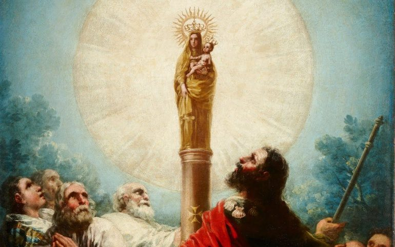
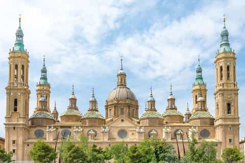
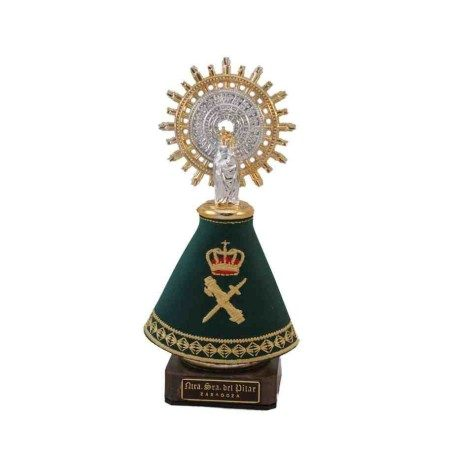
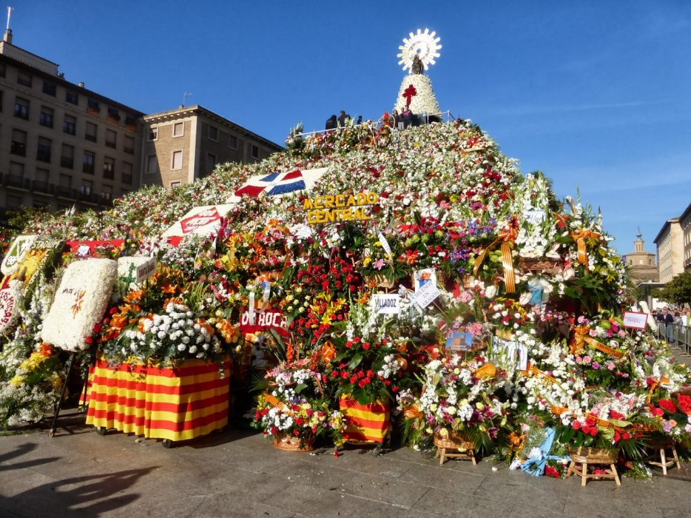

La Tradición de la Aparición

En los albores del cristianismo, cuando la fe en Jesucristo resucitado apenas comenzaba a extenderse por el mundo mediterráneo, ocurrió en la ciudad de Caesaraugusta —la actual Zaragoza— un acontecimiento que la tradición hispana considera el más antiguo de la historia mariana: la aparición de la Virgen María al Apóstol Santiago el Mayor. La fecha que recoge la tradición es el 2 de enero del año 40 de la era cristiana, lo que convierte este episodio en algo teológicamente singular: María habría aparecido a su apóstol mientras ella misma todavía vivía en la tierra, en lo que los teólogos denominan una aparición «en vida» o visión extática.
Según la tradición recogida en documentos medievales y en la historiografía eclesiástica española, el Apóstol Santiago se encontraba en las orillas del río Ebro, desanimado ante las escasas conversiones obtenidas durante su misión en Hispania, cuando la Virgen se le apareció rodeada de ángeles y de resplandor celestial, de pie sobre una columna de jaspe. María le entregó esa columna —el «pilar» que da nombre a la advocación— junto con una pequeña imagen de sí misma, y le encargó que levantara en ese mismo lugar una capilla, prometiendo que permanecería en Zaragoza hasta el fin del mundo como signo de protección y misericordia sobre el pueblo fiel. Esta promesa, conocida en la piedad popular como la «venida en carne mortal», subraya la excepcionalidad del acontecimiento: no es una aparición post mortem, sino una manifestación de la Virgen viva que anticipa su intercesión materna sobre los pueblos que la invocarán a lo largo de los siglos.
Aunque la historicidad estricta del episodio no puede verificarse con los criterios de la historiografía moderna, la Iglesia ha reconocido la legitimidad del culto y la antigüedad de la devoción. La continuidad ininterrumpida del santuario desde los primeros siglos del cristianismo hispano hasta nuestros días —documentada por las excavaciones arqueológicas bajo la basílica actual, que han sacado a la luz restos de edificios de culto superpuestos desde época paleocristiana— constituye un testimonio elocuente de la profunda raíz que esta devoción ha echado en el alma de los pueblos de habla hispana.
La Basílica del Pilar

Sobre el lugar donde la tradición sitúa la aparición se sucedieron a lo largo de los siglos diferentes construcciones de culto, cada una mayor que la anterior, reflejo del crecimiento de la devoción popular. La primera capilla, levantada según la tradición por el propio Santiago y sus discípulos, fue ampliada en época visigoda y luego renovada tras la Reconquista. El edificio románico del siglo XII dio paso a una iglesia gótica más ambiciosa, que a su vez fue sustituida por el grandioso templo barroco cuya construcción se inició en 1681 bajo la dirección de Felipe Sánchez y fue concluida —con intervenciones sucesivas de los arquitectos Herrera el Mozo, Caramanchel y otros maestros— ya entrado el siglo XVIII.
La basílica actual, una de las más grandes de España, presenta una planta de salón longitudinal coronada por once cúpulas, la central de gran tamaño y las diez laterales más pequeñas, cuya silueta con sus azulejos policromados define el perfil más reconocible del horizonte de Zaragoza junto al Ebro. El interior alberga algunos de los tesoros artísticos más importantes del barroco español. Destaca de manera singular la Santa Capilla, pequeño oratorio oval diseñado por Ventura Rodríguez en el siglo XVIII, que custodia la sagrada columna de jasper original y sobre ella la venerable imagen de la Virgen. Esta imagen, de apenas unos quince centímetros de altura y tallada en madera policromada, es de estilo románico tardío y muestra a María entronizada sosteniendo al Niño Jesús; la columna bajo sus pies —que los fieles besan al pasar a través de una abertura practicada en el muro de la capilla— es el objeto de devoción más venerado del santuario.
El interior de la basílica conserva además frescos de Francisco de Goya en dos de las cúpulas, realizados entre 1771 y 1772 cuando el pintor aragonés era aún un joven artista: la Adoración del Nombre de Dios en la cúpula del coro y las escenas marianas en la cúpula del Coreto, trabajos que preludian el genio que el maestro de Fuendetodos desplegaría en su madurez. La sacristía, el museo pilarista y los tesoros de la basílica completan un conjunto patrimonial de valor incalculable para la historia del arte español.
El 12 de Octubre: Fiesta de la Hispanidad
La fiesta litúrgica de Nuestra Señora del Pilar se celebra el 12 de octubre, fecha que en España coincide con el Día de la Fiesta Nacional. Esta coincidencia no es accidental: el 12 de octubre de 1492 fue el día en que Rodrigo de Triana divisó las costas del Nuevo Mundo desde la carabela Pinta, marcando el comienzo del encuentro entre Europa y América. La Virgen del Pilar, patrona de los soldados y misioneros que cruzaron el Atlántico, quedó así vinculada simbólicamente al nacimiento de la civilización hispanoamericana, y el 12 de octubre se convirtió en el «Día de la Raza» —renombrado posteriormente «Día de la Hispanidad» y luego «Fiesta Nacional de España»— en celebración del legado cultural y espiritual compartido entre España y los pueblos de Iberoamérica.
Este vínculo entre la devoción pilarista y la identidad hispánica trasciende lo meramente simbólico. En numerosas ciudades de América Latina existen iglesias, parroquias y capillas dedicadas a la Virgen del Pilar, llevadas allí por emigrantes aragoneses y españoles que reprodujeron en el Nuevo Mundo su devoción más entrañable. La imagen de la Virgen sobre la columna de jaspe es reconocida y venerada en toda la geografía iberoamericana como signo de unidad espiritual entre pueblos que, pese a la distancia y la diversidad, comparten una misma madre en la fe.
Arte e Iconografía

La imagen titular de la basílica, conocida como «la Pequeñica» por sus reducidas dimensiones, es una talla románica de unos quince centímetros de alto en madera policromada, que representa a la Virgen entronizada con el Niño Jesús en brazos, ambos con corona de oro. La imagen no se expone desnuda: va siempre revestida con un manto ricamente bordado que cubre el trono y la columna, dejando visibles únicamente los rostros de la Virgen y el Niño y sus coronas. El manto se cambia a diario —la ceremonia del «cambio de manto» es uno de los actos de culto más seguidos por los peregrinos— y la colección de mantos del Pilar constituye un patrimonio textil único en el mundo, con piezas bordadas en oro y plata, algunas incrustadas con piedras preciosas y donadas por reyes, jefes de Estado y devotos de todo el mundo a lo largo de los siglos. El manto más famoso y suntuoso es el llamado «manto del milenio», confeccionado para el año 2000 con miles de brillantes y esmeraldas.
La iconografía pilarista ha influido profundamente en el arte aragonés y español. Además de los ya citados frescos de Goya, la basílica conserva obras de Luca Giordano, González Velázquez y otros maestros barrocos. En el exterior, las torres y cúpulas de la basílica han sido retratadas por pintores, fotógrafos y dibujantes de todas las épocas, convirtiéndose en uno de los símbolos arquitectónicos más reconocibles de la Península Ibérica.
La Devoción Popular

Las Fiestas del Pilar, celebradas durante la semana del 12 de octubre en Zaragoza, constituyen uno de los festivales religiosos y populares más multitudinarios de España. El punto culminante de las celebraciones es la Ofrenda de Flores a la Virgen del Pilar, en la que durante dos días desfilan por el paseo de la Independencia y la plaza del Pilar centenares de miles de personas —muchas de ellas vestidas con los trajes regionales aragoneses— portando ramos de flores que se depositan en torno a una gigantesca estructura floral que va formando, progresivamente, la figura de la Virgen. La ofrenda de flores, retransmitida por televisión a toda España e Iberoamérica, convoca entre 700.000 y un millón de personas y concluye con una imagen monumental de la Virgen del Pilar compuesta íntegramente de flores naturales de todos los colores.
A lo largo del año, la basílica recibe millones de peregrinos procedentes de toda España y de los países hispanoamericanos. La devoción a la Virgen del Pilar está especialmente arraigada en Aragón —donde es patrona regional— pero se extiende por toda la geografía española e hispanoamericana con una vitalidad que no ha disminuido con el paso de los siglos. El rezo del Santo Rosario ante la Santa Capilla, los novenos solemnes y las misas de peregrinos constituyen el tejido cotidiano de una devoción que, según la promesa recogida en la tradición, habrá de durar «mientras el mundo sea mundo».